# Spatial data rasterization packageremotes::install_github("rspatial/terra", configure.args ="--with-proj-lib=$(brew --prefix)/lib/")
Skipping install of 'terra' from a github remote, the SHA1 (b7757c30) has not changed since last install.
Use `force = TRUE` to force installation
library("terra")
terra 1.7.24
# Raw "faces.dat" data as dataframe. Each row is one face, and the 4096 columns# each represent a pixel value in the face, in a 64 x 64 image.facedata_raw <-read.delim(file ="data/faces.dat", header =FALSE, sep ="")# Creates an image of a face given it's 4096 pixel valuescreate_face <-function(values) {# New SpatRaster object with correct face parameters face_rast <-rast(nrows =64, ncols =64)# Set extentext(face_rast) <-c(0, 64, 0, 64)# Set pixel valuesvalues(face_rast) <- values# Return face rotated to upright orientationreturn(trans(face_rast))}# Displays a face in grayscale colourshow_face_grayscale <-function(rast) {par(xaxt ="n", yaxt ="n") cols <-gray(seq(0, 1, length =256))image(rast, col = cols)}# Displays a face using a divergent colour scaleshow_face_divergent <-function(rast) {par(xaxt ="n", yaxt ="n")plot(rast)}
(a)
# Vector of pixel values of 100th facevector_100 <-t(facedata_raw[100, ])# Rasterize and show faceface_raw_100 <-create_face(vector_100)show_face_grayscale(face_raw_100)title("100th Face")
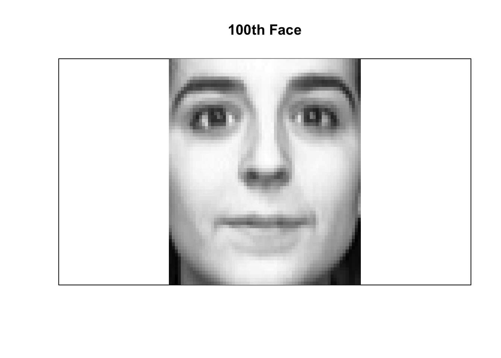
(b)
# The mean vector of face pixel valuesvector_mean <-as.matrix(colMeans(facedata_raw))# Rasterize and show mean faceface_mean <-create_face(vector_mean)show_face_grayscale(face_mean)title("Mean Face")
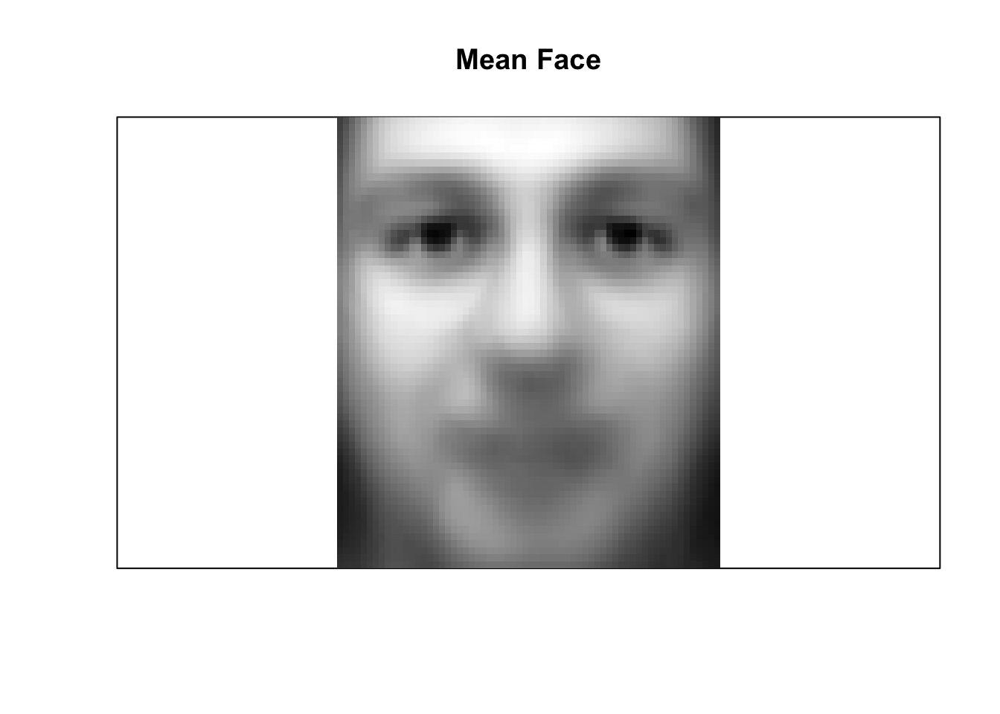
# Face data with the mean face vector removedfaces_removed <- facedata_raw# Remove mean vector from each facefor (i inseq_len(nrow(faces_removed))) { face <- faces_removed[i, ] face_new <- face -t(vector_mean) faces_removed[i, ] <- face_new}# Vector of pixel values of 100th face, with the mean removedvector_removed_100 <-t(faces_removed[100, ])# Rasterize and show faceface_removed_100 <-create_face(vector_removed_100)par(mfrow =c(1, 2))show_face_grayscale(face_removed_100)show_face_divergent(face_removed_100)
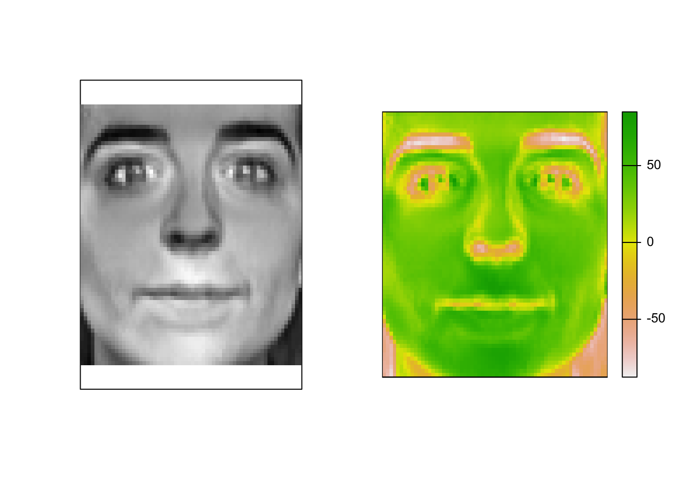
The 100th face with the mean face values subtracted, rasterized. On the left is a grayscale image; on the right is colourized using a divergent colour scale to better visualize negative values.
(c)
# Principal component analysis of faces with mean removedpca <-prcomp(faces_removed, center =FALSE)# Principal components from PCApcs <- pca$x# Eigenvectors from PCAevecs <- pca$rotation# Eigenvalues from PCAevals <- pca$sdev^2# Proportion of variance from PCApv <- evals /sum(evals)# Cumulative proportion of variance from PCApv_cum <-cumsum(evals) /sum(evals)# Plot scree plots of Eigenvaluesplot( pv *100,type ="b",ylim =c(0, 25),xlab ="Eigenvalues",ylab ="Proportion of variance (percentage)",main ="Proportion explained by Eigenvalues")
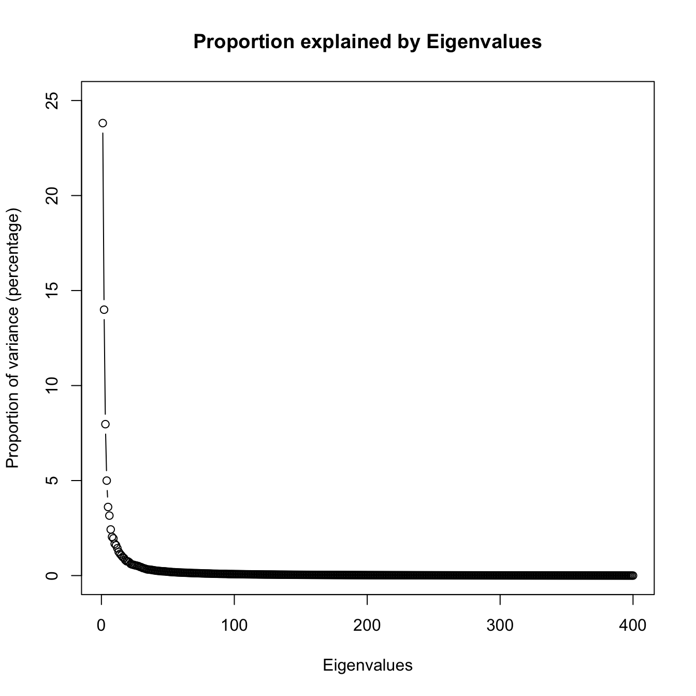
plot( pv_cum *100,type ="b",ylim =c(0, 100),xlab ="Eigenvalues",ylab ="Cumulative Proportion of variance (percentage)",main ="Cumulative Proportion of variance explained by Eigenvalues")
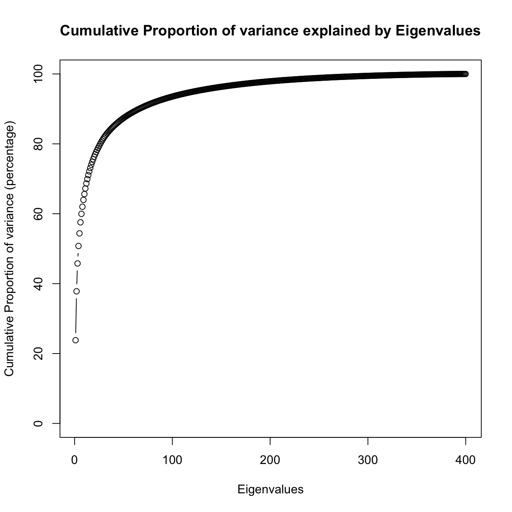
Eigenvalues plotted against proportion of variance explained. The first plot shows individual Eigenvalue variance percentages sorted in descending order, whilst the second plot shows the cumulative proportion for each descending Eigenvalue.
(d)
# Last (400th) Eigenvalueeval_400 <- evals[400]eval_400
[1] 1.797793e-25
The 400th Eigenvalue shown above is equal to zero (shown as a very small number due to the limitations of “numerics” in R, essentially equivalent to zero). This can be expected because Eigenvalues represent the variance in the values based on each principal component (PC). Since they are sorted in descending order, we can see that the first few PCs, especially the first one, contribute a very large amount to the variance of the face data. Conversely, the Eigenvalues drop off rapidly until our final Eigenvalue of zero. An Eigenvalue of zero means that the PC associated with it does not contribute to the variance of the data much at all, and the first 399 values have already captured the variability.
(e)
# Threshold to keep Eigenvalues explaining at least this amount of variancethreshold <-0.95# Show cumulative variance with threshold markedpar(mfrow =c(1, 1))plot( pv_cum *100,type ="b",ylim =c(0, 100),xlab ="Eigenvalues",ylab ="Cumulative Proportion of variance (percentage)",main ="A: Threshold of 0.95 visualized")abline(h =95, lty ="dashed", col ="red")
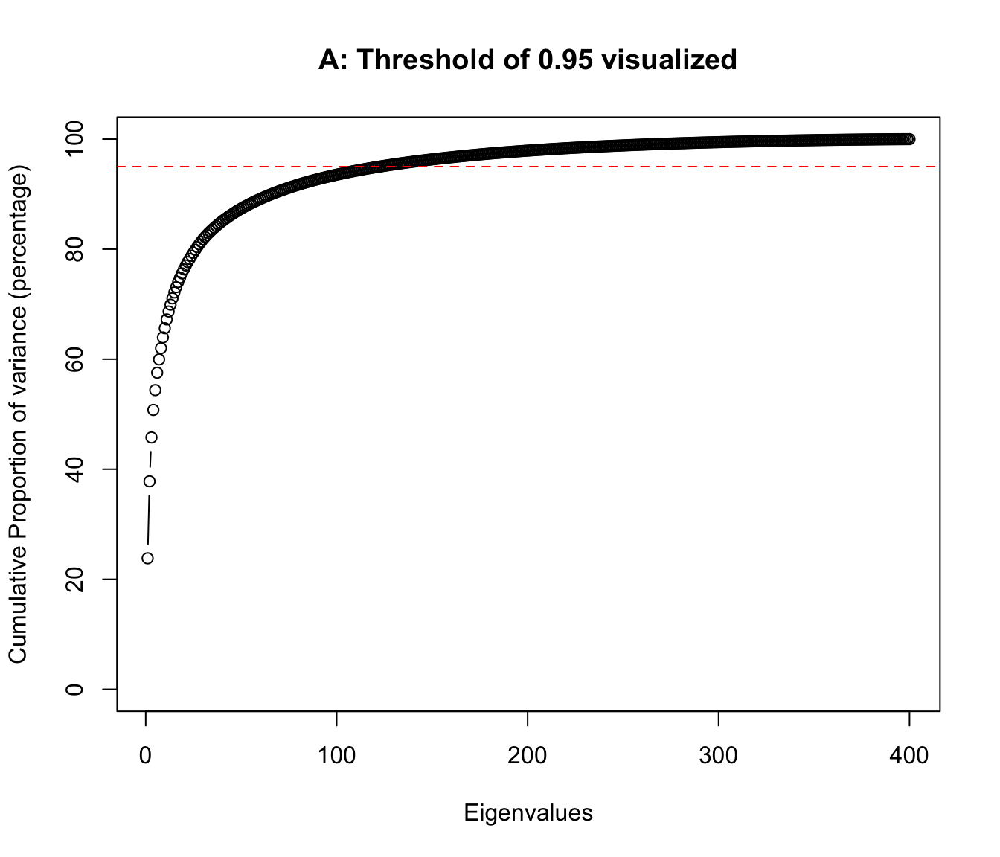
# Number of Eigenvalues/PCs to keep based on thresholdkeep <-min(which(pv_cum > threshold))keep
[1] 123
# Show cumulative variance with threshold marked, with cropped x-axisplot( pv_cum *100,type ="b",ylim =c(0, 100),xlim =c(0, 140),xlab ="Eigenvalues (cropped)",ylab ="Cumulative Proportion of variance (percentage)",main ="B: Threshold of 0.95 visualized for first 140 Eigenvalues")abline(h =95, lty ="dashed", col ="red")
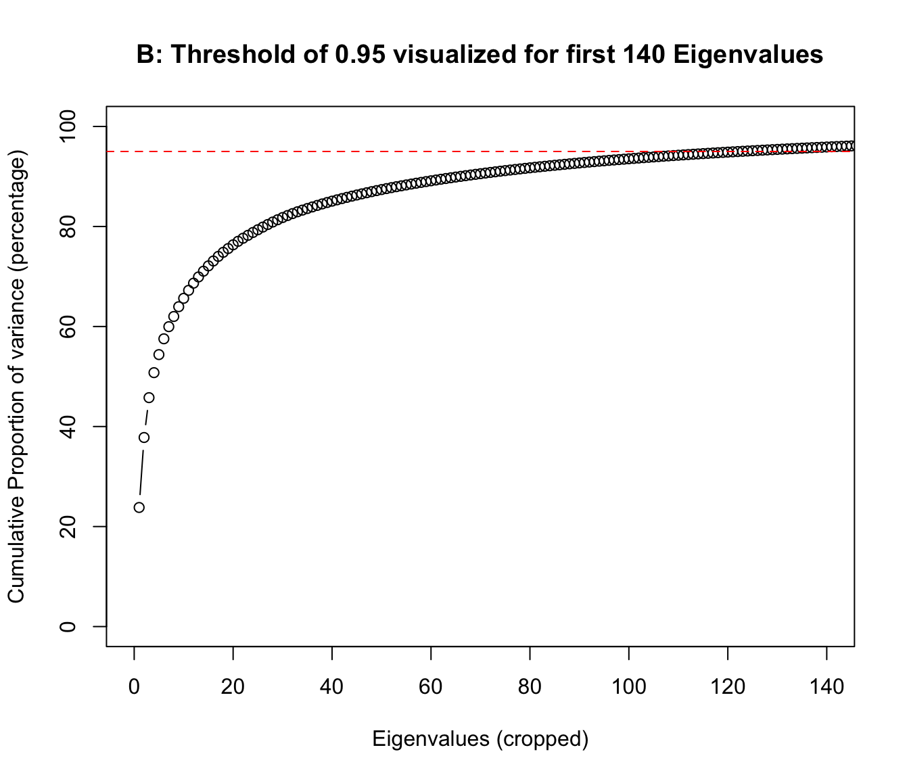
To account for most of the variance, a threshold can be set to determine the number of prinicpal components (PCs) that account for this proportion of variance. For example, with a threshold of 50%, or 0.50, you would determine at which number of PCs the cumulative proportion of variance explained reaches 50% of the total.
I set the variance at 0.95, and determined the number of Eigenvalues to keep based on it. The first plot (A) shows the cumulative proportion of variance associated with each Eigenvalue, and we can see a red dashed line visualizing the cumulative variance proportion of 0.95. After determining the intersect of the scree plot and the threshold, I zoomed into the plot to better see individual points on the cumulative scree plot. 95% of the variance is explained by the first 123 PCs, which already removes 277 less necessary PCs. This way, we can still account for most of the variance at 95%, whilst cutting the number of PCs down to under a third of the size.
(f)
# Defines how many top Eigenvectors to take (i.e. the top n values)n_top <-5# The top 5 Eigenvectors (PCs)evecs_topn <- evecs[, 1:n_top]# Iterate and show top n Eigenvectorsfor (i inseq_len(n_top)) {# Current Eigenvector evec <- evecs_topn[, i]# Rasterize and show the Eigenvector visualizationpar(mfrow =c(1, 2)) face_evec <-create_face(evec)show_face_grayscale(face_evec)title(paste0("Eigenvector ", i))show_face_divergent(face_evec)}
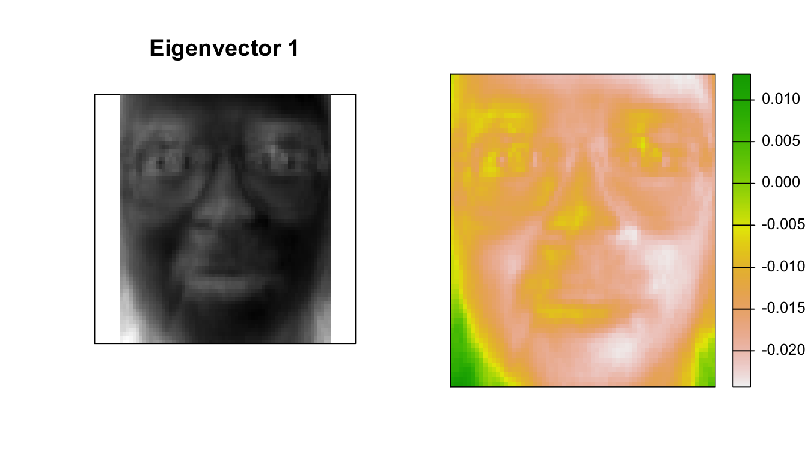
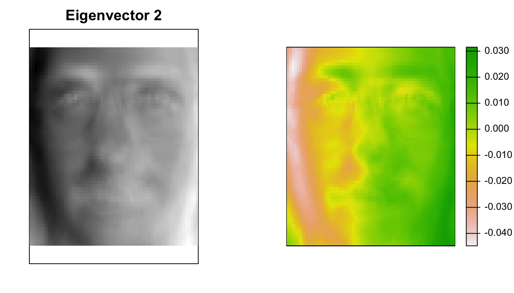
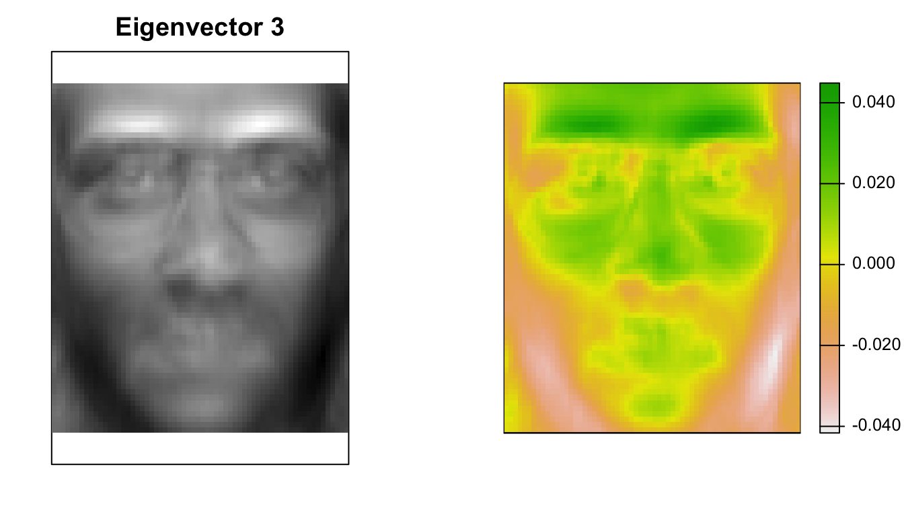
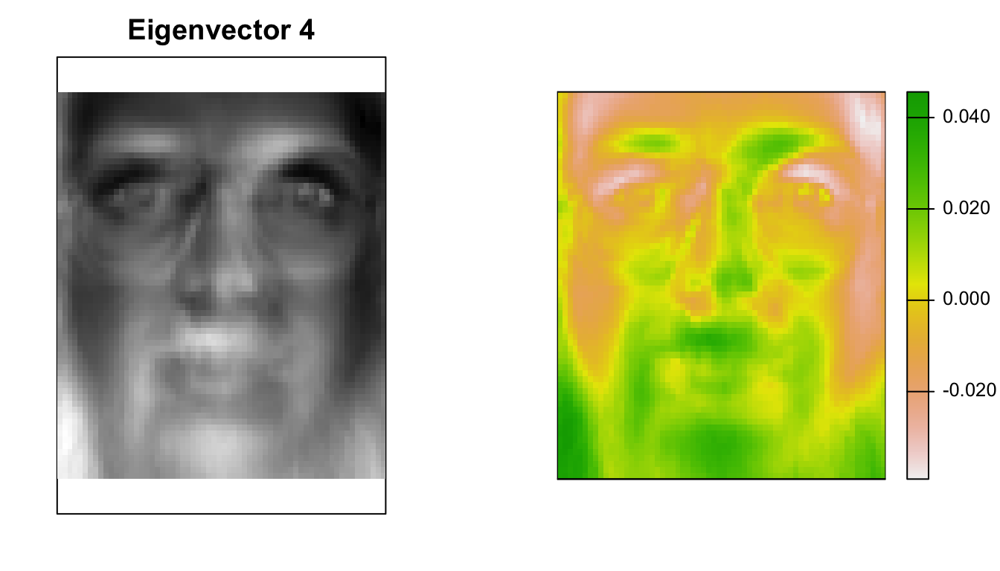
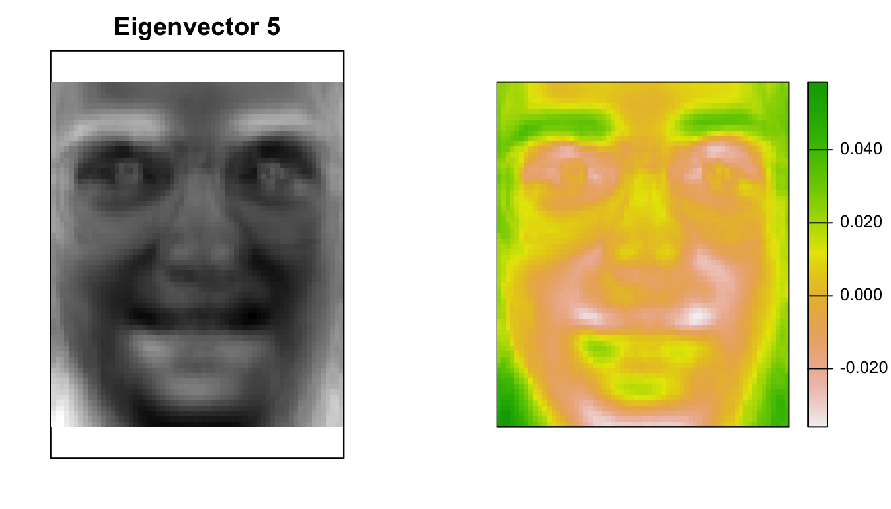
Since the Eigenvector values are relative and not in standard 8-bit colour format, they are visualized above as both grayscale and colourized using diverging colour scales.
(g)
# List of number of principal components to use in reconstructionsn_pcs <-c(10, 100, 200, 399)# nth face to be reconstructedn_face <-100# Rasterize mean face, raw face, and face with mean removed for referencepar(mfrow =c(1, 3))show_face_grayscale(face_mean)title("Mean Face")vector_raw_n <-t(facedata_raw[n_face, ])face_raw_n <-create_face(vector_raw_n)show_face_grayscale(face_raw_n)title("Raw Face Image")# Face vector of 4096 pixel values with the mean removed for reconstructionvector_removed_n <-t(faces_removed[n_face, ])face_removed_n <-create_face(vector_removed_n)show_face_grayscale(face_removed_n)title("Mean Removed")
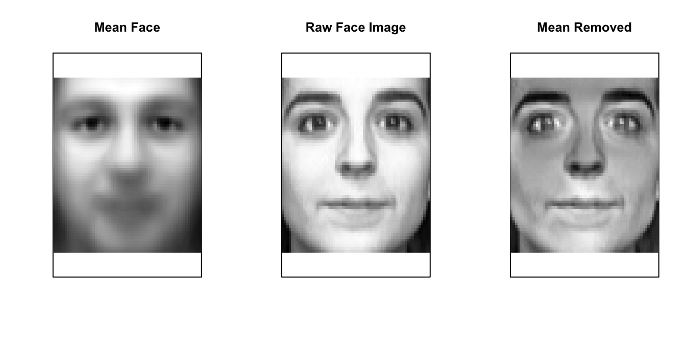
# Iterate and reconstruct specifed face with specifed PCspar(mfrow =c(1, length(n_pcs) /2))for (n inseq_len(length(n_pcs))) {# The top n selected principal components evecs_selected <-as.matrix(evecs[, 1:n_pcs[n]])# Projection of face with mean subtracted onto selected Eigenvectors proj <-t(vector_removed_n) %*% evecs_selected# Reconstructed vector from projection and Eigenvectors with mean added back vector_reconstr <-t(proj %*%t(evecs_selected)) + vector_mean# Rasterize and show reconstructed face face_reconstr <-create_face(vector_reconstr)show_face_grayscale(face_reconstr)title(paste0(n_pcs[n], " PCs"))}
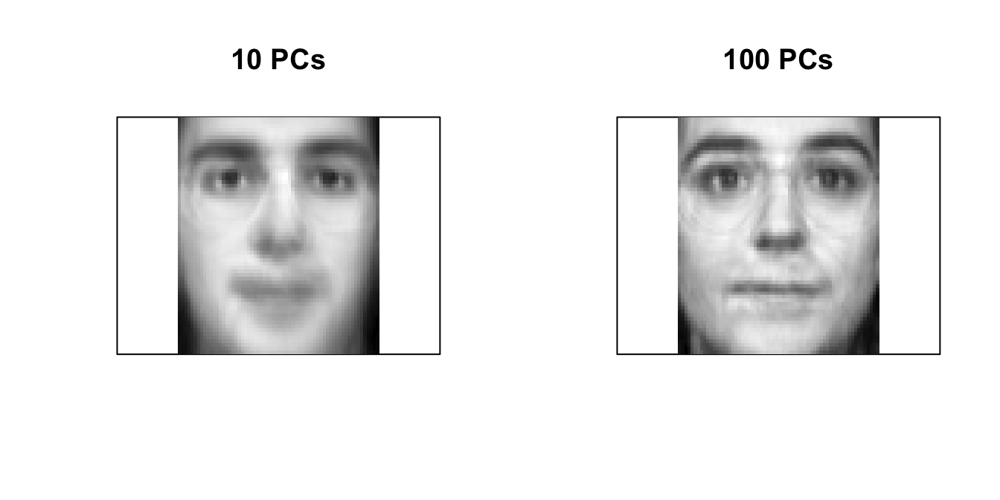
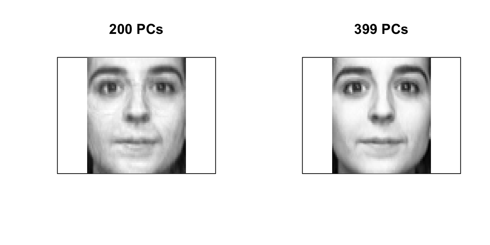
We can see clearly that the more principal components used in the reconstruction, the better the reconstruction is, and the closer it is to the original raw face. With only the top 10 principal components, the face reconstruction looks very similar to the mean. With 399 principal components, the reconstruction is virtually identical to the raw.